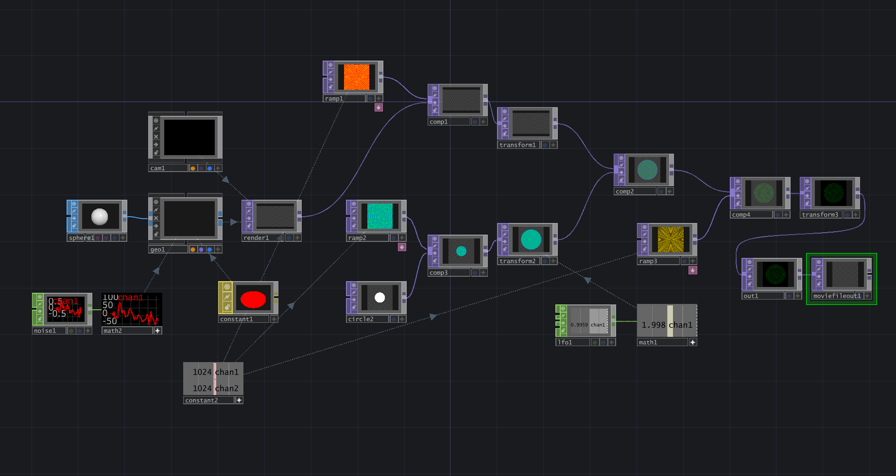

Digital materiality
This is a motion-controlled game. Players use both hands to individually control the airplane's two wings.
Game Rules: The faster and wider the player swings both hands, the more upward and forward force is generated by the wings. By creating a difference in the force applied to each wing, the player can steer the airplane in different directions.
Individual Project Introductions
1. Create the terrain and place the airplane model
Use the Terrain tool in Unity to create an uneven landscape, making the game more challenging.
Find a suitable airplane model from the Unity Asset Store and place it at the designated starting point of the game.

2. Create a coin model and place it in suitable positions
Create a coin model in Blender using a cylinder, and import it into Unity.

Place the coins sequentially along the flight path in Unity, with varying heights to increase the game's difficulty.

3. Paint the terrain with different textures
Based on the terrain variations, paint different parts with different textures — for example, snow on higher elevations, grass in the middle, and soil at the bottom.
4. Create scripts with different functionalities
CameraFollow: Controls the camera to always follow the airplane.
Coin: When the airplane collides with a coin's collider, the coin disappears.
GameManager: Manages the scoring system — each time a coin is collected, the score in the top-left corner of the screen increases by one.
PlaneController: The core script of the game. Each wing of the airplane has an empty object that provides upward lift and forward thrust when triggered. Additionally, there is another empty object at the nose of the plane that provides balancing force to counteract the lift from the rear and prevent the plane from flipping. This script also includes a module to adjust the airplane's center of gravity.
SensorInputController: Used to control the airplane based on input from the hardware in later stages.

During the test where the plane is controlled via the keyboard, everything worked smoothly. The plane could fly properly using the "A" and "L" keys. Everything is ready for hardware integration.

5. Failed sensor attempts
After purchasing and assembling two distance sensors, it was discovered that they could not effectively transmit data. Due to some fixed internal configurations of the sensors, interface issues occurred, making them unusable.

6. Successful sensor attempts
The distance sensor was replaced, but it was found to operate at 5V. Therefore, the main board was also replaced with an Arduino Uno, which supports 5V operation. After testing, everything worked fine, and the sensor can now be integrated into Unity.


7. Send data from Arduino to Unity
Test in Unity whether sensor data can be received. The test shows that adjustments are still needed for the planecontroller, as precise control is currently not achievable.

8. Adjust the plane's control system
To make adjustments easier, the terrain was changed to a flat surface.
Through multiple adjustments, such as the plane's pitch angle, the amount of forward and upward force generated by each hand movement, and the position of the plane's center of gravity, precise control of the airplane was eventually achieved.

9. Encapsulate the controller
Cut two holes in a suitably sized box to allow the sensors to detect hand movements, and place the board and wires inside the box.
